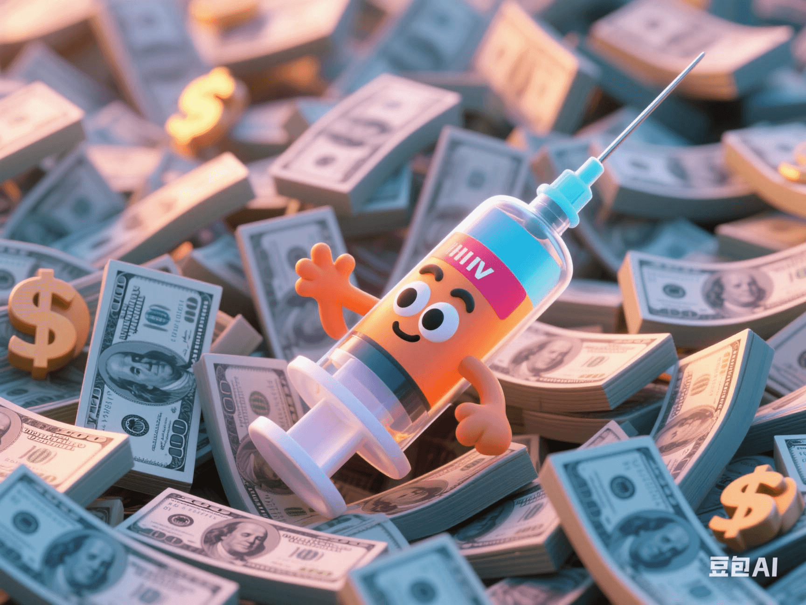

Can 50 Cents Prevent AIDS? The Capital Game Behind the Long-Acting HIV Vaccine
PeaceLove.Top Insights :2025-04-19
🤔 Would You Believe That You Can Prevent HIV with Just '50 Cents'?
A drug called Cabotegravir LA (long-acting HIV preventive vaccine) is quietly changing the global AIDS-prevention landscape. One injection every two months can reduce the risk of HIV infection by 99%, making it the 'the most effective AIDS-prevention tool ever'. However, embarrassingly, this drug is trapped in 'rich countries' due to high patent fees and the barriers of pharmaceutical giants. More than 95% of the newly infected people globally each year come from low-and middle-income countries, but they can't afford this vaccine-like wonder drug.
🔬 What is Cabotegravir LA?
Cabotegravir is a long-acting integrase inhibitor developed by ViiV Healthcare, a subsidiary of GSK, for 'pre-exposure prophylaxis' (PrEP) of HIV. Compared with traditional daily oral medications (such as Truvada), it only needs to be injected once every 8 weeks, with more stable effects and better compliance:
| Type | Efficacy Maintenance | Compliance | Protection Rate |
|---|---|---|---|
| Traditional PrEP drugs 💊 | Daily oral intake | Prone to missed doses | ~80% |
| Cabotegravir injection 💉 | Once every 8 weeks | High | ~99% |
In two key clinical trials (HPTN083, HPTN084), Cabotegravir showed overwhelming protection in high-risk groups such as men who have sex with men, transgender people, and African women, far outperforming the oral version.
💸 Is One Injection Only for the Rich?
🌍 Although Cabotegravir is amazingly effective, it has been widely criticized for its high price (priced at about $3900 per injection in the US market). In regions with severe epidemics but scarce resources such as Africa and Southeast Asia, this price is almost equivalent to 'declaring that the poor have no right to prevent infection' 😢. Pharmaceutical manufacturers argue that 'this is a high-tech R & D result, and patent benefits need to be protected'. However, public-health experts counter that 'HIV is not a rich-people's disease, and drugs should not have a class threshold'. This has also given rise to a global 'patent-unlocking' campaign 💥.
🌐 Who Is Challenging the Capital Monopoly?
1. UNAIDS 📢
It calls on GSK to open patent licenses and allow developing countries to produce generic versions.
2. Indian Pharmaceutical Companies' Generic Versions Are Coming 🇮🇳
After negotiations between the United Nations and GSK, Indian pharmaceutical factories will launch a low-cost version with a cost of only 50 cents per injection in 2025, but large-scale production has not been achieved yet.
3. South African Clinical Pilot 🇿🇦
South Africa has become the first country to provide a national injection program of Cabotegravir to the public, but the supply chain is still restricted.
4. Public-Welfare Organizations Speak Out 🧏♀️
Médecins Sans Frontières (Doctors Without Borders) issued a statement saying that 'preventing HIV should not be kidnapped by the profit logic'.
🧠 Why Is This Game Worth Everyone's Attention?
📌 HIV prevention and control is a global public task, not just a 'charity project of the Western world'! 📌 Cabotegravir LA represents the ultimate integration of precision medicine and public health: the technology is ready, but who can afford it still depends on 'whether someone is willing to make concessions'. This is also a microcosm of a bigger problem:
- ● Why are the prices of vaccines so different?
- ● Why is the price of cancer drugs 10 times different in different countries?
- ● Who is leading the global distribution of health resources?
🔮 Future Trends: Saving Lives or Continuing to Block?
✅ If countries can break down barriers, conduct joint procurement, or promote the popularization of Cabotegravir in a similar 'COVAX model', it may truly change the HIV epidemic trend. ⚠️ Otherwise, this wonder drug will continue to be a luxury in pharmacies, just an unattainable news headline for the poor.